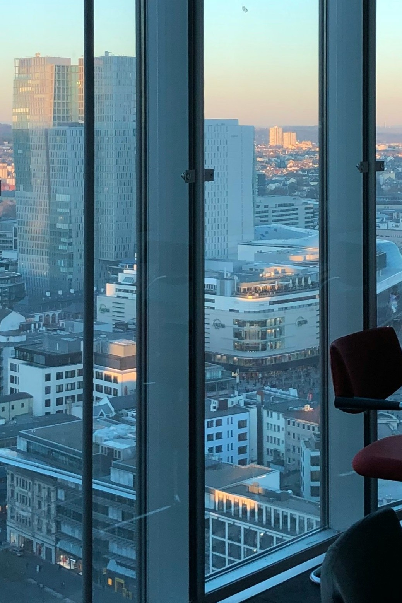
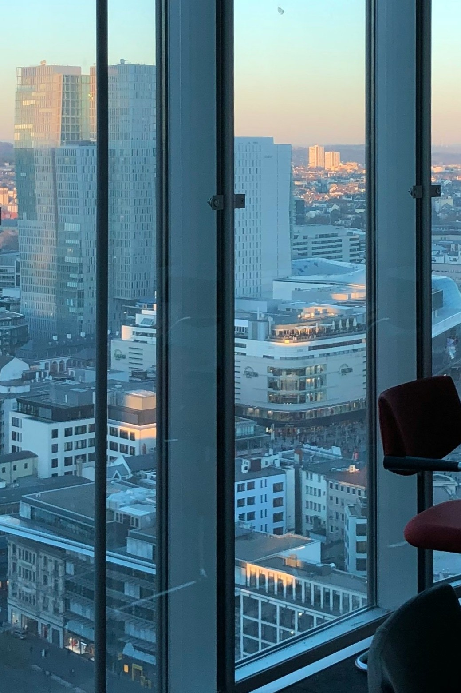

- 求める人材が見つからない？
外国人採用で未来を切り開く - 応募者が集まらない？
外国人材の力で解決します - 優秀な外国人材を見逃さない！
初期選考をスムーズに - 業務内容が合わない？
外国人材の適材適所を実現
採用のお悩みをお聞かせください。
ITFが貴社に最適な人材をご提案し
将来にわたる採用活動を
サポートします。
ITFが貴社に最適な人材をご提案し
将来にわたる採用活動を
サポートします。
採用でお悩みですか？
ITFの外国人採用サービスで解決！
ITFの外国人採用サービスで解決！
外国人採用のメリット
-
-
 優秀な人材と出会える可能性が高まる
優秀な人材と出会える可能性が高まる - 少子高齢化が進む日本では若手の優秀人材獲得が難しくなっています。 応募の幅を広げることで優秀な人材と出会える可能性が高まります。
-
-
-
グローバル化への多言語対応
- 外国人のお客様の接客、母国言語による! 発信などで外国人の集客が計れる。
-
-
-
 適応能力の高さ
適応能力の高さ - 異国で生活し、仕事をする上で外国人は様々な状況に対応できる能力を持っています。教育から文化まで日本人とは異なるため、日本人が気付かなかった問題点を発見したり、新しい発想や考えを発見出来ます。
-
-
-
 多様な視点とアイデアの提供
多様な視点とアイデアの提供 - 外国人材は異なる文化やバックグラウンドを持っており、新しい視点やアイデアを企業に提供します。これにより、業務の革新や改善が促進されます。
-
-
-
 高い専門知識と技術
高い専門知識と技術 - 特定の分野で高度な専門知識や技術を持つ外国人材を採用することで、企業の競争力が強化され、業界内での優位性を確保できます。
-
-
-
 グローバルネットワークの活用
グローバルネットワークの活用 - 外国人スタッフは自身の母国を含む広範なネットワークを持っており、そのネットワークを活用することで国際的なビジネスチャンスを拡大できます。
-
採用サイトの戦略的活用
企業の情報収集は
自社で運用する採用サイトで行われる
自社で運用する採用サイトで行われる

-
認知求人広告、採用メディア、会社説明会、人材エージェントなどによる認知のフェーズ。ここでは多くの求職者の目にふれるきっかけとなり、求職者側も多くの企業を知るきっかけとなります。
-
情報収集現代はSNSを始めとするネットを介した様々な情報共有ツールにより、求職者の情報収集方法や、職場に対する価値観は大きく変化しています。自社が運営する採用サイトを起点として、効果的な採用活動を行いましょう。
-
応募/面談情報収集段階で得た情報で、応募意欲や、入社志望度の差が生まれ、面談時には、求職者からの質問内容や入社意欲の違いを実感できるでしょう。
採用サイト制作はプロにお任せ！
SPCの採用サイト制作は
フルオーダーメイド
SPCで行えるサービスを紹介します
-
01採用特設サイト
 01採用特設サイト制作のプロが会社の魅力を引き出します！採用特設サイトは、求職者に対して自社の魅力を最大限に表現できる専用サイトです。
01採用特設サイト制作のプロが会社の魅力を引き出します！採用特設サイトは、求職者に対して自社の魅力を最大限に表現できる専用サイトです。
コーポレートサイトや、サービスサイトで掲載し辛い内容や、求人媒体では掲載しきれない、多くの情報を掲載して、求職者にアピールできます。
採用サイト制作は、オリジナリティが高いフルオーダーメイドで！ -
02採用LP
 02採用LP制作のプロが効果的な構成作りを行います採用LP（ランディングページ）は、応募獲得を目的とした1ページ構成のWebページで、企業の採用情報を縦長に詰め込んで作成した採用サイト制作になります。
02採用LP制作のプロが効果的な構成作りを行います採用LP（ランディングページ）は、応募獲得を目的とした1ページ構成のWebページで、企業の採用情報を縦長に詰め込んで作成した採用サイト制作になります。
求職者に向けどういったシナリオで見てもらい、応募へのアクションにつながるかを考えながら、Web制作のプロが構成作りを行っていきます。 -
03求人ポータルサイト
 03求人ポータルサイト制作のプロが会社のシステムの要件定義から携わります求人ポータルサイトは「仕事を探している求職者」と「人材を求めている企業」をマッチングする機能を持たせたり、複数のエリアで行われる求人活動を集約させたり、複数の求人情報の検索機能を持たせたり、通常の採用サイト制作よりもリッチな作りとなり、SPCはこういったシステムが絡む採用サイト制作も得意としています。
03求人ポータルサイト制作のプロが会社のシステムの要件定義から携わります求人ポータルサイトは「仕事を探している求職者」と「人材を求めている企業」をマッチングする機能を持たせたり、複数のエリアで行われる求人活動を集約させたり、複数の求人情報の検索機能を持たせたり、通常の採用サイト制作よりもリッチな作りとなり、SPCはこういったシステムが絡む採用サイト制作も得意としています。
多くの人材紹介会社様や、フランチャイズ企業様からご依頼をいただいています。 -
04既存サイト改修04既存サイト改修制作のプロが現状調査からアドバイスまで！難解なレギュレーション環境下や、独自のCMSをご利用の環境下における、部分的なページ改修から、採用サイト制作などもまずはご相談くださいませ。
レギュレーションに沿った制作を行ったり、新たな環境化へのスムーズな移行など、プロの目線でどの制作会社よりも親身で適格なアドバイスも行えます。
コンテンツに差がつく！
採用コンテンツ開発
企業の魅力を更にオリジナリティが高いものに
-
撮影・インタビューPhotography & Interview productionSPCでは、採用に特化したプロのカメラマンや、ライターと専属契約しています。撮影準備から撮影現場の進行まで全てお任せいただけます。
-
動画制作Video production採用活動にPR動画を活用することで、テキストや画像に比べ訴求力が高くなります。企画からシナリオ作り、撮影・編集まで、どの工程も動画制作のプロが親身に対応します。
-
採用ツール制作Recruitment
tool production採用活動で必要な各種採用ツールのコンセプトワークや、トーン＆マナーを統一する事により、企業ブランディングをより一層強く訴求する事ができます。こういった採用ツールの作成もお任せください。
幅広いニーズに応える
料金プラン
ご予算に合わせたご提案を得意としています

お客様の声
ありがたいお言葉、ありがとうございます
-

- わかさクリニックグループ
- 細かなイメージの擦り合わせにも粘り強く対応いただきました。
-

- 荻野化成株式会社
- 希望通りの形になったため非常に満足しています。
-

- 株式会社バーンリペア
- とても雰囲気の良いデザインに仕上がりました。
-

- 税理士法人ネイチャー国際資産税
- 予想以上に成果が出る採用サイトができて大満足です。
-

- オフィスコム株式会社
- ハイスピード・ハイクオリティーで要望に応えてくれる制作会社です。
-

- 株式会社麺屋武蔵
- スムーズで丁寧なやり取りにとても安心しました。
-

- リ・カレント株式会社
- 社内外ともに評価いただける採用サイトが制作できました。
-
×
わかさクリニックグループ
依頼背景
新卒採用を開始する中で、医療系総合職の働くイメージがつかずに困っておりました。現状の採用情報では入社後のイメージが出来ず、求職者が応募に至らないという懸念がございました。SPCの対応
細かなイメージの擦り合わせにも粘り強く対応いただきました。細かなイメージの擦り合わせにも粘り強く対応いただきました。
弊社のご要望を反映した採用サイトが制作できたこと、非常に満足しております。
サイト公開して間もないため、数値面の効果は現状計測ができませんが、社内では法人らしさを表現できているととても好評です。 -
×
荻野化成株式会社
依頼背景
今年は採用ブランディング強化を図っており、弊社が期待しているアウトプットが出せるというのがサイト制作の決め手になっていました。その中で、SPCさんが過去に制作したサイトを見せてもらい、弊社が考えていることに近しい形のものがあり、またこちらがやりたいことと予算感の中で最大限できること、かつ細かい要望に応えてくれそうであるということが最後の決め手になりました。SPCの対応
こちらの希望に対して、即対応をしてくれたのは非常に良かったと感じています。どちらかというと弊社は、業者任せにするよりも自分たちサイト構成も考えてやっていくようにしていたので、イメージとの相違があった際に、すぐに対応してくれるかどうかが、大事な業者選択のポイントではありましたが、そこにしっかりと応えてくれたのは、安心感がありました。最後の方は全面的にお任せしていた状況でした。
社内的には評価も高く、みんながいいサイトだと言ってくれています。採用のコンサルをしてくれている会社からも本当に良い採用サイトだと評価をいただいています。 -
×
株式会社バーンリペア
依頼背景
求職者に仕事内容が伝わっておらず、折角面接に来てもミスマッチが発生しており、採用担当者の時間が無駄になっていました。
また、応募数も少なく満足していませんでした。これらのことをSPC社のコンサルタントに相談したところ、非常に良いご提案を頂くことができたのでご依頼をすることに決めました。SPCの対応
「明るくて元気な感じにしたい」という要望を伝えたところ、とても雰囲気の良いデザインに仕上がりました。また、サイト自体の集客力も高まり、リニューアル後は以前と比較して応募数が10倍になりました。さらに、仕事内容も細かく伝わるようになりミスマッチがかなり少なくなりました。採用サイトの制作自体はそれなりの費用がかかりましたが費用対効果で考えるとすぐにペイするくらいの効果を獲得出来たので依頼をして良かったです。 -
×
税理士法人ネイチャー国際資産税
依頼背景
採用サイトはいわば企業の顔。ブランディングにも深く関わるので、様々なサイト制作会社を調べていた中で最も実績があり、制作センスが輝いていた採用サイト制作.comへお願いすることとしました。SPCの対応
自社サイトから少しでも応募が来るようになればと思っていましたが、サイト制作後は最低でも週に一度のペースで応募が来るようになりました。ここまでの成果が出ると思っていなかったので、大変驚きです。確かな技術と採用のノウハウを持つ採用サイト制作.comでなければ、結果につながる採用サイトは作っていただけなかっただろうと思います。 -
×
オフィスコム株式会社
依頼背景
多くの求人媒体に求人広告を掲載していますが、応募者が少ない上に求める人材と応募者とのミスマッチが多く、常に頭を抱えていました。採用活動の底上げと会社のブランディングを図るため、採用サイトの立ち上げを決断しました。SPCの対応
他の数社で断られた短納期の要望にも応えてもらい、短納期にもかかわらず、立派なサイトに仕上がったと社内でも好評でした。代表を含め社内の全員が満足のいく採用サイトを作ってくださいました。今後もサイト改修なども継続して依頼していければと考えています。 -
×
株式会社麺屋武蔵
依頼背景
あまり自社の良さをアピールできていなかったことが私たちの採用課題だったので、その課題を解決するために採用サイト制作.comへ採用サイトの制作を依頼しました。SPCの対応
打ち合わせの最中に、自分たちで当たり前と思っていたサービスを強みだと教えてくださり、ホームページ上でうまくまとめていただけました。メールや電話の他に、直接打ち合わせの場も用意してくださったので、伝えたいメッセージを伝えることができました。完成したサイトはまさしく抱えていた採用課題をクリアできるような魅力あふれるサイト。面接に来る人の中でも、「採用サイトを見た」という人が大幅に増えたので、採用サイト制作.comで制作を依頼して良かったと思っています。 -
×
リ・カレント株式会社
依頼背景
24年新卒採用向けに採用サイトを刷新することになり、これまでお願いしていた会社さんだけでなく広く情報収集してご依頼先を決めることになりました。
当社は業種柄、サービスや仕事の内容を学生に伝えることが難しく、認知してもらいづらいという課題がありました。SPCの対応
初回のお打ち合わせでは当社の事業や採用活動について細かくヒアリングいただき、当社の現行HPに見える課題も率直にお示しいただいた上で当社の意図を汲んだご提案をくださいました。制作中も小まめにニュアンスなどが確認でき、安心して制作を進めることができました。サイトオープン後、選考中の学生さんから「働く人や社風がイメージしやすかった」という声を多数いただき、選考過程で何度も見返していただけるサイトになったと感じます。また、社員からも「デザインがとても良くなった」と評判が良く、社内外ともに評価いただいています。
採用サイト制作実績多数
オーダーメイドの採用サイト制作実績の一部を
ご紹介いたします。


まずはお気軽にご相談ください。
採用サイト制作のプロが御社に最適な
採用サイト制作をご提案します。
採用コラム
採用コラムでは、“採用活動・求人サイト運営に
役立つ情報を発信していきます”
-
- 採用サイト
-
美容室求人で採用サイトの必要性が高い理由とは？若者向けにビジュアル重視で制作するポイント
-
美容室の求人に採用サイトは必要でしょうか？ 美容師は給与・待遇だけでなく、美的感覚やサ...美容室の求人に採用サイトは必要でしょうか？ 美容師は給与・待遇だけでなく、美的感覚やサ...
-
- 採用サイト
-
学習塾の採用サイト制作で意識したいポイントは？学習塾の採用サイトが必要な理由と併せて解説
-
厚生労働省の調査によると、2023年時点において学習塾業界の有効求人倍率は1.92倍で、これに...厚生労働省の調査によると、2023年時点において学習塾業界の有効求人倍率は1.92倍で、これに...
-
- 採用サイト
-
製造業の採用サイト制作で意識したいポイントは？採用サイトが重要な理由と併せて解説
-
製造業は他の業界と比べると、採用応募が集まりづらいと言われています。これは、特に1995年...製造業は他の業界と比べると、採用応募が集まりづらいと言われています。これは、特に1995年...